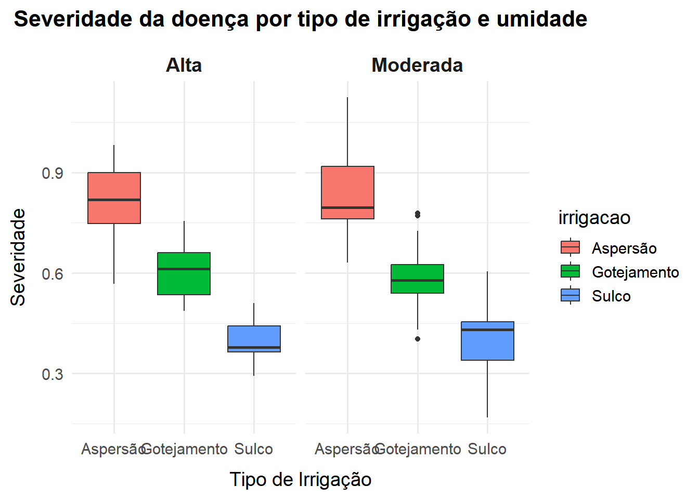

graficos
format: html editor: visual —
Visualização de dados
Gráficos em ggplot
O ggplot2 é o pacote usado para visualização dos dados. Ele pode ser carregado de forma independente (library(ggplot2)) ou como parte do conjunto de pacotes do tidyverse.
A construção de gráficos com o ggplot2 segue uma lógica baseada em camadas, que são adicionadas à medida que se confecciona o gráfico, por isso que se usa o sinal de +, porque significa a adição de mais uma camada. A estrutura básica começa com a função ggplot(), que define a estética da distribuição dos dados que serão trabalhados. Em seguida, adiciona-se uma ou mais camadas com funções do tipo geom_(), que especificam o tipo de gráfico desejado, como pontos (geom_point()), linhas (geom_line()), barras (geom_bar()), entre outros.
Usa-se o pipe (|>) para enfatizar uma sequência de comandos ou ações no chunk e para evitar adicionar o nome do data frame dentro da função ggplot(). O pipe deve ter sempre um espaço antes dele e, geralmente, deve ser seguido por uma nova linha.

Exemplo de gráficos no ggplot2
Importação de dados
Construindo o gráfico
A primeira função para criar um ggplot é a função ggplot, que define o conjunto de dados a ser utilizado (o data frame onde os dados foram armazenados, ex. magnésio).
A função ggplot() define o plano com os eixos x e y. Usamos a função aestetic (aes), para descrever como as variáveis são mapeadas (eixos x e y). Para adionar cor usa-se a função color = nome da cor, ou código. Ao incluir esta função dentro da função aes, dizemos ao ggplot que os pontos devem ser mapeados esteticamente utilizando cores para cada variavel.
Exemplos:
Gráficos de pontos
A função geom_point define que a forma geométrica a ser utilizada é baseada em pontos, gerando um gráfico de dispersão. A função alpha trabalha com a tansparência.
A função shape é utilizada para adicionar diferentes formas ou tipos de marcadores para diferenciar as variáveis (exemplo: círculo e triângulo).
Gráficos de pontos + geom_jitter
Frequentemente, em gráficos com muitos dados agrupados, ocorre a sobreposição de pontos, dificultando a visualização individual de cada observação. Para resolver esse problema, pode-se utilizar a função geom_jitter() no ggplot2.
Essa função desloca ligeiramente os pontos de forma aleatória, permitindo visualizá-los de forma mais clara e separada. Para evitar uma dispersão excessiva dos dados, é possível controlar esse deslocamento por meio do argumento width, que define a largura do espalhamento horizontal. Isso garante que os pontos permaneçam próximos ao seu valor original, mas sem se sobrepor.
Gráfico de barras
Neste exemplo, utilizamos os pacotes ggplot2 e dplyr para gerar um gráfico de barras que representa a média da variável comppara cada tratamento (trat) no conjunto de dados dat_mg. Base dat_mg com as colunas trat (tratamentos) e comp (comprimento).
Primeiro, os dados são agrupados pela variável trat com a função group_by(), e em seguida é calculada a média da variável comp usando summarise(). O argumento na.rm = TRUE garante que valores ausentes (NA) sejam ignorados no cálculo da média.
Com os dados resumidos, utilizamos a função ggplot() para construir o gráfico. A função geom_bar() com o argumento stat = "identity" indica que os valores do eixo y já foram previamente calculados (não devem ser contados ou somados automaticamente). O preenchimento das barras é definido por fill = trat e as bordas recebem cor preta para destacar as divisões.
Os rótulos dos eixos são definidos com labs(), e o tema theme_minimal() é aplicado para um visual mais limpo e moderno.
Este tipo de gráfico é útil para comparar médias entre diferentes grupos, facilitando a interpretação visual de experimentos com tratamentos ou categorias distintas.
Code
library(ggplot2)
library(dplyr)
# Calcular média por tratamento
media_mg <- dat_mg |>
group_by(trat) |>
summarise(media_comp = mean(comp, na.rm = TRUE))
# Gráfico de barras
ggplot(media_mg, aes(x = trat, y = media_comp, fill = trat)) +
geom_bar(stat = "identity", color = "black", width = 0.6) +
labs(x = "Tratamento", y = "Média de Comprimento") +
theme_minimal()Gráfico de linhas:
Neste trecho de código, é criado um gráfico de linhas e pontos utilizando os dados de média por tratamento (media_mg), previamente calculados.
Code
media_mg$trat <- factor(media_mg$trat, levels = unique(media_mg$trat))
# Criar gráfico de linhas com pontos
ggplot(media_mg, aes(x = trat, y = media_comp, group = 1)) +
geom_line(color = "steelblue", size = 1.2) +
geom_point(size = 3, shape = 21, fill = "white", color = "steelblue") +
labs(x = "Tratamento", y = "Comprimento Médio") +
theme_minimal()É possível adicionar título, subtítulo, rótulos dos eixos, legenda explicativa e fonte dos dados usando a função labs(). Esses elementos enriquecem o gráfico, tornando-o mais informativo e interpretável, especialmente em relatórios, artigos e apresentações.
Code
# Gráfico de barras com informações adicionais
ggplot(media_mg, aes(x = trat, y = media_comp, fill = trat)) +
geom_bar(stat = "identity", color = "black", width = 0.6) +
labs(
title = "Média de Comprimento por Tratamento",
subtitle = "Visualização comparativa das médias da variável 'comp'",
x = "Tratamento",
y = "Média de Comprimento",
caption = "Fonte: Dados experimentais - dat_mg"
) +
theme_minimal()Gráfico de Boxplot
Os boxplots são gráficos muito úteis para analisar a distribuição de uma variável numérica, especialmente quando queremos comparar essa distribuição entre diferentes grupos (por exemplo, tratamentos experimentais).
Esse tipo de gráfico resume visualmente medidas estatísticas importantes, como:
Mediana (linha central da caixa);
Quartis (limites superior e inferior da caixa);
Valores máximos e mínimos dentro dos limites definidos;
Outliers (valores discrepantes), que aparecem como pontos fora das “linhas” do boxplot.
No R, utilizamos a função geom_boxplot() dentro do pacote ggplot2 para criar esse tipo de visualização. O eixo x deve conter uma variável categórica (como trat), e o eixo y uma variável numérica (como comp).
Code
library(ggplot2)
# Criar boxplot da variável 'comp' por tratamento
ggplot(dat_mg, aes(x = trat, y = comp, fill = trat)) +
geom_boxplot(outlier.color = "red", outlier.shape = 21, outlier.fill = "white") +
labs(
title = "Distribuição da Variável 'comp' por Tratamento",
subtitle = "Boxplot representando a dispersão e tendência dos dados por grupo",
x = "Tratamento",
y = "Comprimento",
caption = "Fonte: Dados experimentais - dat_mg"
) +
theme_minimal()Composição de gráficos com o pacote Patchwork
O pacote patchwork permite combinar diferentes gráficos criados com o ggplot2 em uma única visualização. Após instalar e carregar o pacote, é necessário atribuir um nome a cada gráfico individual, o que deve ser feito no chunk correspondente a cada um.
Para isso, escolha um nome representativo e atribua a ele o resultado da análise utilizando o banco de dados, seguido pelo uso do operador pipe (%>%) para continuar a construção do gráfico.
Depois de definir todos os gráficos separadamente, a combinação é feita utilizando seus nomes e conectando-os com o sinal de adição (+) ou com a barra vertical (|), dependendo da organização desejada (horizontal ou vertical).
Exemplo de uso do pacote patchwork:
Code
library(ggplot2)
library(patchwork)
#Simulando um conjunto de dados
set.seed(123)
# Simulando os dados
dados_fitopatologia <- data.frame(
irrigacao = rep(c("Gotejamento", "Aspersão", "Sulco"), each = 30),
umidade = rep(c("Alta", "Moderada"), times = 45),
severidade = c(
rnorm(30, mean = 0.6, sd = 0.1), # Gotejamento
rnorm(30, mean = 0.8, sd = 0.15), # Aspersão
rnorm(30, mean = 0.4, sd = 0.1) # Sulco
)
)
# Gráfico 1: Boxplot
grafico1 <- dados_fitopatologia |>
ggplot(aes(x = irrigacao, y = severidade, fill = irrigacao)) +
geom_boxplot() +
labs(
title = "Severidade por tipo de irrigação",
x = "Irrigação",
y = "Severidade"
) +
theme_minimal(base_size = 14) +
theme(
plot.title = element_text(size = 16, face = "bold", margin = margin(b = 10)),
axis.title.x = element_text(margin = margin(t = 10)),
axis.title.y = element_text(margin = margin(r = 10)),
plot.margin = margin(t = 15, r = 15, b = 15, l = 15)
)
# Gráfico 2: Jitter por umidade
grafico2 <- dados_fitopatologia |>
ggplot(aes(x = irrigacao, y = severidade, color = umidade)) +
geom_jitter(width = 0.2, size = 2) +
labs(
title = "Severidade por irrigação e umidade",
x = "Irrigação",
y = "Severidade"
) +
theme_minimal(base_size = 14) +
theme(
plot.title = element_text(size = 16, face = "bold", margin = margin(b = 10)),
axis.title.x = element_text(margin = margin(t = 10)),
axis.title.y = element_text(margin = margin(r = 10)),
plot.margin = margin(t = 15, r = 15, b = 15, l = 15)
)
# Composição com patchwork
(grafico1 | grafico2) +
plot_annotation(
title = "Análise Fitopatológica: Severidade do Oídio em Tomate",
theme = theme(
plot.title = element_text(size = 18, face = "bold", hjust = 0.5, margin = margin(b = 15))
)
)Gráficos com facet_wrap()
A função facet_wrap() no ggplot2 é usada para dividir um gráfico em vários painéis com base em uma variável categórica — ótimo para comparar subgrupos dentro dos dados.
Exemplo:
Code
# Simulando os dados
set.seed(123)
dados_fitopatologia <- data.frame(
irrigacao = rep(c("Gotejamento", "Aspersão", "Sulco"), each = 30),
umidade = rep(c("Alta", "Moderada"), times = 45),
severidade = c(
rnorm(30, mean = 0.6, sd = 0.1),
rnorm(30, mean = 0.8, sd = 0.15),
rnorm(30, mean = 0.4, sd = 0.1)
)
)
# Gráfico com facet_wrap por nível de umidade
grafico_facetado <- ggplot(dados_fitopatologia, aes(x = irrigacao, y = severidade, fill = irrigacao)) +
geom_boxplot() +
facet_wrap(~ umidade) + # Dividindo os gráficos por nível de umidade
labs(
title = "Severidade da doença por tipo de irrigação e umidade",
x = "Tipo de Irrigação",
y = "Severidade"
) +
theme_minimal(base_size = 14) +
theme(
plot.title = element_text(size = 16, face = "bold", hjust = 0.5, margin = margin(b = 12)),
strip.text = element_text(size = 14, face = "bold"), # Título de cada painel (Alta / Moderada)
axis.title.x = element_text(margin = margin(t = 10)),
axis.title.y = element_text(margin = margin(r = 10))
)
# Mostrar o gráfico
grafico_facetado